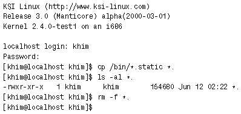
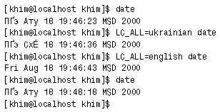

В двух предыдущих статьях* мы рассмотрели
файловую систему и управление процессами в ОС Linux. На все
это мы глядели со стороны ядра: строго говоря, термин «Linux»
и относится к ядру, а ОС в целом правильнее именовать
GNU/Linux, поскольку многие критически важные ее компоненты
взяты из системы GNU, создаваемой Фондом свободного ПО (Free
Software Foundation, FSF). Именно так, кстати, делается в
официальных названиях многих дистрибутивов (например, Debian
GNU/Linux).
Настало время вспомнить и о пользователе — ведь это для
него, собственно, создаются файлы и запускаются процессы, — а
также о том, что для управления системой ему необходим
пользовательский интерфейс. В этой статье речь пойдет о
традиционном для UNIX-систем интерфейсе командной строки и о
языке наиболее популярного в Linux командного интерпретатора
bash.
Вы, возможно, удивитесь: есть же графические оболочки,
такие как GNOME или KDE; именно благодаря им наблюдается
сейчас бурный рост популярности Linux! Разве с их появлением
командная строка не превратилась в никому не нужный
анахронизм? Вовсе нет. Она по-прежнему остается самым удобным
средством комбинирования программ и автоматизации рутинных
процедур.
Что касается графических оболочек, то они одновременно и
слишком просты, и слишком сложны. Элементарные действия вроде
запуска отдельных программ и основных операций с файлами
выполняются там очень похоже на то, как это происходит в
Windows, и пользователь, знакомый с Windows, легко освоит их
без посторонней помощи. Организация же взаимодействия
программ, наоборот, требует довольно высокой программистской
квалификации: например, среда GNOME основана на модели CORBA,
а манипулировать CORBA-объектами весьма непросто. Командный
интерпретатор предоставляет в наше распоряжение некую «золотую
середину» — возможности весьма широкие и при этом относительно
легко осваиваемые.
Примеры и иллюстрации, как и в предыдущих статьях,
приводятся на материале дистрибутива KSI-Linux Release 3.0
(Manticore).
Скрипты и интерпретаторы
Командный интерпретатор, как следует из его названия,
интерпретирует команды, т. е. выполняет их непосредственно
(без предварительной компиляции). Он обрабатывает команды,
вводимые пользователем в командной строке, а также скрипты —
заранее подготовленные последовательности команд, хранящиеся в
текстовом виде.
Надо сказать, что скрипты играют в GNU/Linux (и UNIX
вообще) куда более важную роль, чем командные файлы в Windows
и DOS. Например, из более чем тысячи (!) программ в каталоге
/usr/bin того компьютера, на котором пишутся эти строки,
примерно четверть является скриптами того или иного вида, а уж
количество вспомогательных скриптов, используемых разными
программами для внутренних нужд и не предназначенных для
исполнения «широкой публикой» (а потому хранящихся в других
каталогах), вообще не поддается учету. На плечи скриптов
ложится и большая часть «тяжелой работы» по запуску системы. А
если требуется автоматизировать какие-либо действия, то самый
простой способ — опять-таки написать несложный скрипт.
В любой «полноценной» (не сокращенной для помещения в
тостер или мобильный телефон) версии GNU/Linux имеется не
менее двух командных интерпретаторов плюс еще три-четыре языка
скриптов, не используемых в командной строке (таких как perl,
tcl, python или scheme), и это не считая «мини-языков» типа
sed или awk. Почему бы не ограничиться одним интерпретатором и
его командным языком? Главным образом потому, что люди не
похожи друг на друга и у них разные предпочтения. И чтобы
учесть интересы максимального числа пользователей, создатели
дистрибутивов включают в них по несколько интерпретаторов, а
администраторы обычно предоставляют пользователям своих систем
право выбрать по собственному вкусу язык для работы в
командной строке.
Из всех командных интерпретаторов для UNIX-систем два
являются «классическими». Это B Shell (Bourne Shell),
созданный Стефеном Бурном (Stephen R. Bourne) для седьмой
версии UNIX, и C Shell, разработанный в Беркли Уильямом Джоем
(William N. Joy). Язык C Shell, основанный на командном
интерпретаторе шестой версии UNIX, содержал ряд расширений,
помогающих в интерактивной работе и в написании скриптов:
историю команд, псевдонимы (aliases), массивы и многое другое.
Однако при всех своих несомненных преимуществах он имел один
очень серьезный недостаток — был несовместим с B Shell.
Поэтому, когда FSF разработал интерпретатор bash
(Bourne-Again SHell), сочетающий синтаксис B Shell с мощью C
Shell, привлекательность C Shell значительно снизилась. И хотя
многие бывшие пользователи BSD или коммерческих версий UNIX
используют C Shell при работе в GNU/Linux, стандартом де-факто
в этой ОС является bash. (Впрочем, для аварийных дискет bash,
занимающий «целых» 420 Кбайт, великоват, и на них часто
помещают более компактный интерпретатор, например A Shell,
вмещающийся в 62 Кбайт.)
Именно bash интерпретирует основную массу скриптов из
/usr/bin и подавляющее большинство вспомогательных скриптов.
(Поскольку B Shell не может быть включен в GNU/Linux по
лицензионным соображениям, скрипты, изначально рассчитанные на
B Shell, также интерпретируются посредством bash.) Поэтому из
всех командных интерпретаторов пользователю GNU/Linux в первую
очередь необходимо освоить bash.
Подробно описывать bash в журнальной статье невозможно, да,
впрочем, и не слишком нужно: в конце концов, он снабжен весьма
подробной документацией, которая вызывается командой info
bash. Здесь же мы остановимся на наиболее характерных и
интересных его особенностях.
Команды и метасимволы
Конечно, bash может выполнять любые команды, имеющиеся в
системе, но некоторые из них являются подпрограммами
интерпретатора (внутренние команды), а некоторые другие, хотя
и представляют собой самостоятельные программы, специально
предназначены для использования в командных скриптах (внешние
команды). Внутренних и внешних команд bash насчитывается более
сотни; перечень наиболее, на мой взгляд, часто применяемых с
краткими описаниями приводится во врезке на
с. 154. (Оценка употребительности, разумеется, чисто
субъективная: я, например, обычно получаю имя файла без пути с
помощью конструкции ${filename//*/}, а кто-то, возможно,
использует для этого специальную команду basename, хотя она
внешняя и из-за этого работает несколько медленнее.)
Как же устроена сама команда? Ее базовая структура во всех
языках скриптов одинакова и весьма проста: сначала
записывается имя команды, за ним может следовать определенное
число опций (ключей) и аргументов (параметров), отделяемых от
имени и друг от друга пробелами. Регистр символов существенен
в любом месте команды; имена большинства команд записываются
строчными буквами. Специальные символы — ‘*’, ‘$’, ‘?’ ‘!’,
‘>’, ‘<’ и др. — используются в командах в качестве
метасимволов, т. е. служат для управления работой самого
интерпретатора; именно поэтому их избегают употреблять в
именах команд, файлов, каталогов и т. д. При необходимости
вывести на экран строку, содержащую спецсимволы, ее обычно
заключают в кавычки (существуют и другие способы вывода
спецсимволов, но этот — самый распространенный).
Стандартно каждая команда записывается на отдельной строке,
но можно поместить в одной строке и несколько команд: они
отделяются друг от друга точками с запятой, если нужно, чтобы
очередная команда ждала завершения работы предыдущей, и
амперсандами, если команды должны выполняться параллельно.
Длинную команду, которой не хватает одной строки, можно
перенести на следующую с помощью символа ‘’.
Радости интерактивной работы
Надо сказать, что для интерактивной работы bash
предоставляет массу удобств (на которые вы уже, скорее всего,
обращали внимание, если работали в GNU/Linux). Он поддерживает
такие средства редактирования командной строки, как повтор
символов, макросы, «карман» (буфер) и т. д., а также историю
(т. е. возможность повторить ранее введенную команду) и
настраиваемое автоматическое дополнение.
Так, чтобы запустить, скажем, программу mysql_
convert_table_format, достаточно набрать в командной строке
mysql_co и нажать клавишу табуляции: bash, зная названия
доступных команд, сам «допишет» имя. (Если в системе есть
несколько команд, начинающихся с заданного префикса, он выдаст
их перечень, а если их более 100, то предварительно уточнит,
действительно ли нужен такой огромный список. Кстати, с
помощью данного свойства bash легко выяснить число доступных
команд: для этого достаточно нажать клавишу табуляции,
находясь в начале строки.) А когда название команды введено (и
после него поставлен пробел), интерпретатор позволяет тем же
способом ввести имя файла.
Автозаполнение также можно вызвать, нажав клавишу
<Meta> (в ее роли обычно выступает <Alt>)
одновременно с одним из специальных символов: ‘/’ вызывает
дополнение имени файла, ‘!’ — команды, $ — переменной, ‘~’ —
пользователя, @ — машины. А при нажатии последовательно клавиш
<Ctrl>+x и соответствующего специального символа
выдается список возможных вариантов дополнения.
Но и это еще не все. Например, автодополнение можно
программировать... Вернемся, однако, к языку интерпретатора
bash.
Шаблоны
Поскольку ряд идей B Shell был использован при создании
командных интерпретаторов DOS и Windows NT (Windows 9X не
имеет собственного интерпретатора), многие конструкции bash
могут показаться вам знакомыми. Однако это сходство зачастую
обманчиво и нередко вводит в заблуждение пользователя
DOS/Windows. Хорошей иллюстрацией здесь могут послужить
шаблоны.
Базовые правила задания шаблонов для имен файлов в bash
довольно просты: ‘*’, как и в DOS, означает любое число любых
символов, а ‘?’ — любой одиночный символ. Кроме того, можно
перечислить символы в квадратных скобках (разрешается
вставлять между ними пробелы); а символ ‘^’ или ‘!’ в начале
такого списка будет указывать, что символы не должны
встречаться в данной позиции.
Если интерпретатор DOS поручает обработку шаблонов
конкретным командам, то bash выполняет ее самостоятельно и
передает командам не шаблоны, а готовые списки подходящих
файлов. В результате команды иногда ведут себя совсем не так,
как ожидает пользователь DOS.
 |
| Рис. 1. Что же здесь
произошло? |
Посмотрите на рис. 1: исходя из опыта работы в DOS
естественно было бы предположить, что каждый из файлов с
именем вида ‘*.static’ будет скопирован в файл с таким же
именем, но без расширения, а образовался файл с диким именем
‘*.’ (впрочем, это произошло только потому, что в каталоге
имелся всего один файл, подходивший под шаблон; если бы их
оказалось несколько, bash выдал бы сообщение об ошибке).
Как же тогда получить имена без расширений (точнее, с
отсеченной частью после точки — в Linux нет расширений в
понимании DOS)? Об этом вы узнаете в конце следующего раздела,
посвященного переменным.
Переменные
Начнем с отличий между переменными bash и командного языка
DOS. Их удобно продемонстрировать на примере.
Рассмотрим команду, которая «дописывает» в переменную
окружения CLASSPATH путь к архиву JAVApackage (подобные
команды часто вставляются в конфигурационные файлы
инсталляторами различных программ). В DOS она имела бы
приблизительно следующий вид:
set CLASSPATH=%CLASSPATH%;c:Program
FilesBig Program
JAVApackage.jar
А в «версии для Linux» она может выглядеть так:
CLASSPATH=”$CLASSPATH${CLASSPATH:+:}
/opt/big-program/
JAVApackage.zip”
export CLASSPATH
или так:
export CLASSPATH=”$CLASSPATH${CLASSPATH:+:}/opt/
big-program/JAVApackage.zip”
Как видим, в DOS переменные ограничиваются с двух сторон
символами ‘%’, а в bash маркируется только их начало —
символом ‘$’: признаком конца служит первый символ, не
разрешенный в именах переменных (разрешены буквы, цифры и
символ подчеркивания). Кроме того, в bash нет команды,
аналогичной SET: интерпретатор распознает присваивание
значения переменной просто по наличию знака равенства.
Кстати, благодаря тому, что установка переменной окружения
в bash не требует отдельной команды, ее можно сделать частью
любой команды (рис. 2). Присвоенное таким образом значение
действительно только для данной команды, а в среду bash
изменения не вносятся.
 |
| Рис. 2. Присваивание значения переменной
окружения может быть не только отдельной командой, но и
частью другой команды |
Вернемся, однако, к нашему примеру. Несмотря на более
короткую форму записи самих переменных и операции
присваивания, «Linux-версия» оказалась длиннее. Во-первых,
там, где командный язык DOS обходится одним-единственным
знаком ‘;’, она содержит устрашающего вида конструкцию
${CLASSPATH:+:}, а во-вторых, в ней присутствует несколько
загадочная для пользователя DOS команда export.
И то, и другое — следствие заботы о безопасности. Команда
export делает переменную доступной другим командам. В
командных файлах DOS переменные всегда внешние, и в
подавляющем большинстве случаев это действительно нужно,
поскольку переменные служат почти исключительно для обмена
данными между программами. В bash же широко используются
внутренние переменные — в качестве счетчиков, для хранения
промежуточных результатов вычислений или имен файлов и т. д.
Поэтому переменные, которые должны быть доступны за пределами
данного скрипта, специальным образом отмечаются. Конечно,
маловероятно, что имя внутренней переменной случайно совпадет
с именем переменной окружения, в результате чего значение
последней окажется испорченным и какая-то программа начнет
работать неправильно, но, как говорил Козьма Прутков, «лучше
перебдеть, чем недобдеть».
Конструкция ${CLASSPATH:+:} вставляет в строку двоеточие
(которое в bash служит разделителем элементов CLASSPATH, а
также PATH, играющей ту же роль, что и в DOS), но лишь при
условии, что строка CLASSPATH не является пустой. Без этой
меры предосторожности результатом выполнения команды могла бы
оказаться переменная CLASSPATH вида :/opt/big-program
/JAVApackage. zip, т. е. с пустым элементом в начале. Такой
элемент обозначает текущий каталог, который в Linux, в отличие
от DOS, необходимо включать в CLASSPATH (и в PATH) в явной
форме. Причем в большинстве дистрибутивов это не делается — из
тех же соображений «как бы чего не вышло».
Данное обстоятельство часто сбивает с толку начинающих
пользователей Linux:
— Как же так: я ведь и атрибуты executable for all на файл
MyGreatCommand поставил, и в первой строке #!/bin/sh написал,
а мне все равно говорят: command not found!
— Конечно! Ведь ты же ее в PATH не поместил!
— Какой PATH? Она у меня в текущем каталоге!
— А у тебя разве текущий каталог входит в PATH?
— ???
Впрочем, путь к команде, находящейся в текущем каталоге,
можно указать в форме ./MyGreatCommand, и этого будет
достаточно, чтобы она запустилась.
Если в DOS с переменной можно сделать, грубо говоря, две
вещи — присвоить ей значение и извлечь значение, присвоенное
ранее, — то в bash вариантов намного больше: скажем, извлечь
значение можно десятком разных способов, включая условное
извлечение (с которым мы познакомились на примере конструкции
${CLASSPATH:+:}), извлечение подстроки и извлечение с
использованием шаблона. В частности, конструкция ${X##шаблон}
позволяет, извлекая строку, удалить из нее максимально
возможную соответствующую шаблону подстроку, считая от начала,
а ${X%шаблон} — минимально возможную, считая с конца. Так что
отсечь «хвосты» упомянутым в предыдущем разделе именам файлов
можно было бы, например, следующим образом:
for i in /bin/*.static
do j=${i##*/}
cp ”$i” ”${j%.static}”
done
Подробнее о разных вариантах извлечения переменных
рассказывается во врезке на с. 156. А операторами for и do мы
займемся во второй части статьи.
Системные переменные
Помимо переменных, используемых различными программами, в
Linux, как и в DOS, есть специальные, или «системные»
переменные, значение которых определено заранее, причем их
намного больше. Так, DOS имеет переменную PROMPT, содержащую
приглашение командной строки, а в bash ей соответствуют четыре
переменных: PS1 — основное приглашение; PS2 —
«вспомогательное» приглашение, выдаваемое, когда команда не
уместилась на одной строке; PS3 — приглашение «команды» select
(на самом деле это не команда, а специальная конструкция bash,
призванная облегчить выбор из нескольких вариантов; впрочем,
она используется довольно редко); PS4 — приглашение перед
командами скрипта, выводимыми в режиме трассировки (заметим,
что в bash, в отличие от командного интерпретатора DOS,
скрипты по умолчанию не трассируются).
В документации bash описано множество переменных,
устанавливаемых интерпретатором или влияющих на его поведение.
Назовем для примера $RANDOM, дающую доступ к простому
генератору псевдослучайных чисел, и $!, значение которой равно
PID последней команды, запущенной из данного экземпляра
интерпретатора на асинхронное выполнение. Нам уже встречались
системные переменные ${CLASSPATH, $PATH, а также $LC_ALL,
определяющая страну и язык. С другими, такими как $? —
возвращаемое значение — или $* — список параметров, — мы
познакомимся в дальнейшем.
Виктор Хименко, [email protected]
Окончание в следующем номере.
* В. Хименко. «Файлы, файлы, файлы». «Мир ПК», № 2/2000, с.
64; № 3/2000, с. 50.
«Процессы, задачи, потоки и нити».
«Мир ПК», № 5/2000, с. 42; № 6/2000, с. 54.
Команды bash
Перед тем как перечислять в алфавитном порядке наиболее
употребительные команды bash, необходимо назвать три
«справочных» команды, используемых почти исключительно при
интерактивной работе, — help, info и man. Команда help выдает
краткое описание любой встроенной команды bash, info
предоставляет доступ к входящему в состав системы GNU
развернутому справочнику, в котором bash, разумеется, подробно
описан. Команда man позволяет обратиться к другому, более
старому справочнику, где есть информация о ряде команд, не
описанных в справочнике info (вообще говоря, команда info, не
найдя сведений в собственном справочнике, ищет их и в
справочнике man, однако кое-что можно получить только с
помощью самой man). Естественно, команда help help позволяет
получить справку по help, команда info info — по info, а man
man — по man.
В приводимом ниже списке каждая команда снабжена пометкой,
указывающей, как получить ее более подробное описание: (b)
означает, что команда встроенная и, следовательно, информацию
о ней предоставляет команда help, (i) соответствует команде
info, (m) — команде man.
. (b) — синоним для команды source
: (b) — синоним для команды true
[ (b) — сокращение для команды test, но, в отличие
от нее, требует закрывающей квадратной скобки
(( (b) — соотносится с командой let так же, как [
соотносится с test
[[ (b) — не вполне команда, а особое выражение,
очень похожее на команду [ (test)
alias(b) — позволяет задавать псевдонимы для других
команд
at(m) — ставит программу в очередь на выполнение в
заданное время
atq(m) — в заданное время проверяет очередь программ
на выполнение
atrm(m) — в заданное время удаляет программу из
очереди на выполнение
awk(i) — язык для построчного сканирования и
обработки файлов: простой, маленький и быстрый, но притом
достаточно мощный
batch(m) — выполняет программу, когда система не
слишком загружена
builtin(b) — позволяет вызвать встроенную команду
bash, даже когда ее имя перекрыто именем функции или
псевдонимом
bzip2(i) — более новая, чем gzip, программа сжатия
файлов; работает медленнее, чем gzip, но обеспечивает лучший
коэффициент сжатия
cat(i) — «склеивает» заданные файлы и выдает их на
стандартный выход
cd(b) — изменяет текущий каталог
chgrp(i), chmod(i), chown(i) —
изменяют соответственно группу, права доступа и владельца
файла
command(b) — позволяет вызвать команду — встроенную
или внешнюю, даже когда ее имя перекрыто именем функции или
псевдонимом
cp(i) — копирует файлы и каталоги
cpio(i) — CoPy In/Out — системная программа создания
архивов; не содержит встроенной поддержки сжатия файлов, но
может использоваться совместно с gzip или bzip2
crontab(m) — позволяет модифицировать список
регулярных заданий пользователя
cut(i) — выдает на стандартный выход выбранные части
строк текстового файла
dd(i) — копирует файл блоками, выполняя одновременно
некоторые дополнительные действия
du(i) — вычисляет объем, занятый на диске указанными
файлами
declare(b) — позволяет задать имя и тип переменной
(применяется не слишком часто, так как bash допускает
использование необъявленных переменных)
df(i) — сообщает количество свободного и занятого
места на диске
diff(i) — находит различия между двумя файлами
dirs(b) — выводит список запомненных
подкаталогов
echo(b/i) — выводит на стандартный выход заданное
сообщение
enable(b) — позволяет разрешить или запретить
использование встроенных команд
eval(b) — выполняет аргументы так, как если бы они
были введены в командной строке (ранее часто использовалась
для обращения к переменной, имя которой содержится в другой
переменной)
exec(b) — выполняет системный вызов exec, т. е.
замещает процесс, где исполняется скрипт, другим, заданным в
качестве параметра; часто используется в так называемых
«скриптах-обертках» (wrapper scripts), настраивающих среду для
выполнения программ
exit(b) — завершает работу командного интерпретатора
(и, стало быть, скрипта)
export(b) — делает переменные данного скрипта
доступными для других процессов, запущенных из командного
интерпретатора
file(m) — определяет тип файла (по содержимому;
эвристический анализ выполняется на основе гибкой
настраиваемой базы данных)
find(m/i) — ищет файлы по множеству признаков, но не
по содержимому
false(b/i) — возвращает код ненормального
завершения
getopts(b) — довольно сложная команда, похожая на
аналогичное средство системной библиотеки; позволяет создавать
скрипты, понимающие сложные опции
grep(m) — ищет строки в файлах; может использоваться
совместно с командами find и xargs для поиска файлов по
содержимому
gzip(i) — стандартная для GNU программа сжатия
файлов; способна распаковывать (но не создавать) файлы в
формате compress — более старой UNIX-программы сжатия
install(i) — копирует файлы, одновременно позволяя
устанавливать их атрибуты
kill(b/m) — позволяет послать процессу сигнал; по
умолчанию посылается сигнал SIGTERM, останавливающий процесс;
отсюда такое устрашающее название
less(m) — улучшенная по сравнению с more программа
просмотра файлов
let(b) — вычисляет арифметическое выражение;
выражение может содержать многие операторы языка Си, а также
переменные
local(b) — создает локальную (внутри функции)
переменную
logout(b) — завершает работу командного
интерпретатора, являющегося основным (login shell)
ln(i) — создает ссылки на файлы (дополнительные
жесткие или символические)
ls(i) — выводит список файлов (например, для
заданного каталога)
md5sum(i) — подсчитывает для файлов 128-битовую
контрольную сумму
mkdir(i) — создает подкаталог
mktemp(m) — создает временный файл (чтобы избежать
«дыр» в безопасности, создавайте временные файлы только с
помощью mktemp)
more(m) — постранично выводит файл на экран (служит
для просмотра длинных файлов)
mv(i) — перемещает или переименовывает файлы
(каталоги)
patch(i) — применяет diff-файл (см. diff) к
исходному файлу
popd(b) — удаляет подкаталоги из списка запомненных
подкаталогов
printf(b/i) — обеспечивает форматированную печать
данных (имеет много общего с одноименной функцией стандартной
библиотеки Си)
pushd(b) — добавляет подкаталог в список запомненных
подкаталогов и перемещает подкаталоги внутри этого списка
pwd(b/i) — выводит путь к текущему каталогу
read(b) — считывает строку со стандартного ввода и
присваивает прочитанные значения указанным переменным
readonly(b) — защищает переменную от случайных
изменений
return(b) — выходит из функции и передает управление
в вызвавшую программу
rm(i) — удаляет файлы (подкаталоги)
rmdir(i) — удаляет пустые подкаталоги
sed(i) — потоковый редактор (a Stream EDitor); дает
возможность быстро производить с текстом простые операции
(например, поиск с заменой)
select(b) — довольно сложная команда, позволяющая
организовывать меню с выбором вариантов из списка (в
действительности это даже не команда, а особая синтаксическая
форма, родственная синтаксическим формам while и for)
set(b/i) — очень сложная команда:
- без параметров выдает список всех определенных на данный
момент переменных и функций
- с параметрами вида +<option>, -<option> или
-o <option> включает или выключает «на лету» режимы
настройки командного интерпретатора (их можно устанавливать
и в командной строке)
- все прочие параметры присваиваются последовательно
переменным $1 $2 ... $N
(Команда help set не дает полного описания set; оно есть
только в описании bash, получаемом командой info bash.)
shift(b) — сдвигает позиционные параметры ($1
становится равным $N, $2 — $N+1, $3 — $N+2 и т.д.)
sort(i) — сортирует файл
source(b) — читает и выполняет команды, содержащиеся
в файле (часто используется для того, чтобы вынести
определение переменных в отдельный файл конфигурации)
tar(i) — программа создания архивов (Tape ARchiver);
не содержит встроенной поддержки сжатия файлов, но может
использоваться совместно с gzip или bzip2
test(b/i) — вычисляет значение логического
выражения; в основном проверяет атрибуты файлов (существует?
пуст? исполняемый? подкаталог? и т. д.), однако может также
сравнивать строки
tr(i) — заменяет одни символы на другие по заданной
таблице подстановки
trap(b) — позволяет связать с сигналом особую
обработку
true(b/i) — возвращает код успешного завершения
type(b) — возвращает «тип» слова, заданного в
качестве аргумента (встроенная команда, псевдоним, функция и
т. д.)
ulimit(b) — устанавливает или сообщает системные
квоты для процесса (процессов)
umask(b) — назначение описано в статье «Файлы,
файлы, файлы»
unalias(b) — удаляет имя из списка псевдонимов
uniq(i) — выводит уникальные (или, наоборот,
повторяющиеся) строки в отсортированном файле
unset(b) — удаляет имя из списка переменных
wc(i) — подсчитывает число символов, слов и строк в
файле
xargs(m) — получает параметры со стандартного входа
и вызывает с этими параметрами заданную программу (по
умолчанию echo)
Как уже говорилось, здесь перечислены далеко не все
команды. В типичной системе GNU/Linux их значительно больше:
есть, например, команды, выводящие восьмеричный и
шестнадцатеричный дамп памяти (od и hexdump), печатающие
начало и конец файла (head и tail), а ко многим упомянутым
командам есть дополнительные (например, diff3 позволяет
сравнить три файла, а bzcat — просмотреть файл, упакованный
программой bzip2). Не попали в наш обзор и системные
переменные, имеющие для bash особый смысл. Обо всем этом и о
многом другом вы сможете узнать, набрав в командной строке
слова info bash.
Вернуться
Извлечение значений переменных
[khim@localhost tmp]$ VAR1=1234567890
[khim@localhost tmp]$ VAR2=0987654321
[khim@localhost tmp]$ echo "$VAR1 $VAR2
XXX${VAR1}XXX ZZZ${VAR2}ZZZ"
1234567890 0987654321 XXX1234567890XXX
ZZZ0987654321ZZZ
[khim@localhost khim]$
$ X или ${X} — просто извлечь значение из переменной X
(фигурные скобки необходимы тогда, когда после имени
переменной следует буква или цифра).
[khim@localhost khim]$ ptr=VAR1
[khim@localhost khim]$ echo ${!ptr}
1234567890
[khim@localhost khim]$ ptr=VAR2
[khim@localhost khim]$ echo ${!ptr}
0987654321
[khim@localhost khim]$
${!X} — извлечь значение из переменной, имя которой
хранится в переменной X. Вместе с массивами этого достаточно
для создания и обработки весьма нетривиальных структур
данных.
[khim@localhost tmp]$ echo "${#VAR1}"
10
[khim@localhost tmp]$ echo "${VAR1:${#VAR1}-3}"
890
[khim@localhost tmp]$
${#X} — получить длину строки X; эту операцию удобно
комбинировать с извлечением подстроки.
[khim@localhost tmp]$ echo ${VAR4:?can not proceed
without VAR4} ; echo Ok
bash: VAR4: can not proceed without VAR4
[khim@localhost tmp]$
${X:?выражение} — извлечь значение переменной, а если она
не определена, остановить выполнение скрипта.
[khim@localhost tmp]$ echo
"${VAR1:-ABCDEF} ${VAR3:-ABCDEF}"
1234567890 ABCDEF
[khim@localhost tmp]$ echo
"${VAR1:-ABCDEF} ${VAR3:-FEDCBA}"
1234567890 FEDCBA
[khim@localhost tmp]$
${X:-выражение} — условное извлечение: если переменная
определена (как VAR1), используется ее значение, иначе —
заданное альтернативное выражение (как в случае с VAR3).
[khim@localhost tmp]$ echo
"${VAR1:=ABCDEF} ${VAR3:=
ABCDEF}"
1234567890 ABCDEF [khim@localhost
tmp]$ echo "${VAR1:
=ABCDEF} ${VAR3:=FEDCBA}"
1234567890 ABCDEF
[khim@localhost tmp]$
${X:=выражение} — то же, но альтернативное выражение
становится на будущее значением переменной.
[khim@localhost tmp]$ echo "${VAR1:5} ${VAR2:5:3}"
67890 543
[khim@localhost tmp]$
${X:N1[:N2]} — извлечь из переменной X подстроку,
начинающуюся с N1-го символа (и заканчивающуюся N2-м).
[khim@localhost tmp]$ echo "${VAR1#*[37]}
${VAR2#*[37]}
${VAR3#*[37]}"
4567890 654321 ABCDEF
[khim@localhost tmp]$ echo "${VAR1##*[37]}
${VAR2##*[37]}
${VAR3##*[37]}"
890 21 ABCDEF
[khim@localhost tmp]$ echo "${VAR1%[37]*}
${VAR2%[37]*}
${VAR3%[37]*}"
123456 0987654 ABCDEF
[khim@localhost tmp]$ echo "${VAR1%%[37]*}
${VAR2%%[37]*}
${VAR3%%[37]*}"
12 098 ABCDEF
[khim@localhost tmp]$
${X#шаблон}, ${X##шаблон}, S{X%шаблон}, S{X%%шаблон} —
извлечь строку, удалив из нее часть, соответствующую шаблону.
Шаблон строится по тем же правилам, что и для имен файлов, т.
е. ‘*[37]’ — это любая последовательность символов, а затем
либо ‘3’, либо ‘7’, а ‘[37]*’ — это ‘3’ или ‘7’, а затем любая
последовательность символов. Операции ‘#’ и ‘%’ удаляют
минимальную возможную подстроку, ‘##’ и ‘%%’ — максимальную,
причем ‘#’ и ‘##’ — с начала строки, а ‘%’ и ‘%%’ — с
конца.
[khim@localhost tmp]$ CDPATH=/bin
[khim@localhost tmp]$ CDPATH=/newpath$
{CDPATH:+:$CDPATH}
[khim@localhost tmp]$ echo ${CDPATH}
/newpath:/bin
[khim@localhost tmp]$ unset CDPATH
[khim@localhost tmp]$ CDPATH=/newpath$
{CDPATH:+:$CDPATH}
[khim@localhost tmp]$ echo ${CDPATH}
/newpath
[khim@localhost tmp]$
${X:+выражение} — операция, обратная условному извлечению.
Может показаться мистической, но используется не так уж
редко.
[khim@localhost tmp]$ echo "${VAR1/[123]/x}
${VAR2/
[123]/x} ${VAR3/[123]/x}"
x234567890 0987654x21 ABCDEF
[khim@localhost tmp]$ echo "${VAR1//[123]/x}
${VAR2//
[123]/x} ${VAR3//[123]/x}"
xxx4567890 0987654xxx ABCDEF
[khim@localhost tmp]$
${X/шаблон/выражение}, ${X//шаблон/выражение} — извлечь
строку, заменив в ней часть, соответствующую шаблону, заданным
выражением (поиск с заменой). Операция ‘/’ выполняет замену
однократно, а ‘//’ повторяет ее до победного
конца.